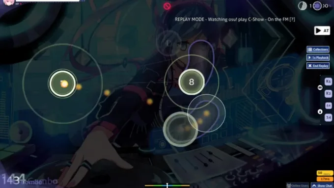
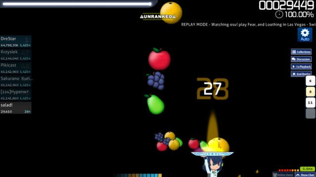

OSU!

osu! es un juego de ritmo que requiere que los jugadores presionen teclas o cliquen en círculos que aparecen en la pantalla en sincronización con la música. El objetivo es obtener la mayor puntuación posible mediante la precisión y la velocidad en la ejecución de los patrones de ritmo.
1. Sincronización con la música o ritmo.
2. Acciones precisas y rápidas.
3. Puntuación basada en la precisión y sincronización.
4. Diferentes niveles de dificultad.
5. Variedad de estilos musicales
1. Osu! (Tap)
Objetivo: Tap en círculos que aparecen en la pantalla siguiendo el ritmo de la música.
Controles: Clic izquierdo para tap.
Características: Requiere precisión y velocidad.
2. Taiko
Objetivo: Tap en tambores que aparecen en la pantalla siguiendo el ritmo de la música.
Controles: Teclas específicas para tap (generalmente X y C).
Características: Requiere coordinación y ritmo.

3. CtB (Catch the Beat)
Objetivo: Atrapa objetos que caen desde la parte superior de la pantalla siguiendo el ritmo de la música.
Controles: Movimiento del mouse para atrapar objetos.
Características: Requiere reflejos y coordinación.
4. Osu!mania
Objetivo: Tap en teclas que aparecen en la pantalla siguiendo el ritmo de la música.
Controles: Teclas específicas para tap (generalmente teclado numérico).
Características: Requiere velocidad y precisión.

Modos de juego especiales
Relay: Juego en equipo con otros jugadores.
Multiplayer: Juego en línea con otros jugadores.
Training: Entrenamiento para mejorar habilidades.
✶ 2007: Dean "peppy" Herbert crea osu! como un proyecto personal inspirado en juegos de ritmo como Osu! Tatakae! Ouendan y Elite Beat Agents.
✶ 2008: Se lanza la primera versión pública de osu!.
✶ 2010: Se crea la comunidad oficial de osu! en internet.
✶ 2011: Se lanza la versión 1.0 de osu!.
✶ 2012: Se introduce el sistema de puntuación y clasificación.
✶ 2013: Se lanza la versión 2.0 de osu! con mejoras significativas en la interfaz y la jugabilidad.
✶ 2014: Se introduce el modo multijugador.
✶ 2015: Se lanza la versión 3.0 de osu! con soporte para beatmaps personalizadas.
✶ 2016: Se introduce el sistema de recompensas y logros.
✶ 2017: Se lanza la versión 4.0 de osu! con mejoras en la interfaz y la performance.

Más de 10 millones de usuarios registrados.
Comunidad activa en foros, Reddit y Discord.
Torneos y eventos regulares.
Creación de beatmaps y contenido personalizado.
Inspirado en juegos de ritmo japoneses.
Comunidad global con jugadores de todo el mundo.
Influencia en la música y la cultura pop.


The Battle Cats es un videojuego de defensa de torres gratuito desarrollado y publicado por....
Last updated 3 mins ago

Minecraft es un videojuego de construcción de tipo «mundo abierto» o en inglés sandbox creado originalmente por....
Last updated 5 mins ago

Half-Life (estilizado HλLF-LIFE) es un videojuego de disparos en primera persona del género ciencia ficción, con toques de techno-thriller, desarrollado por....
Last updated 10 mins ago